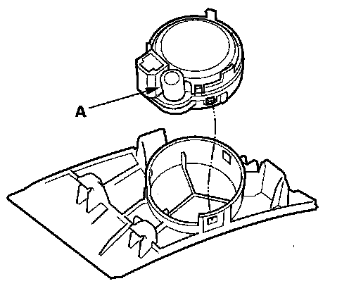
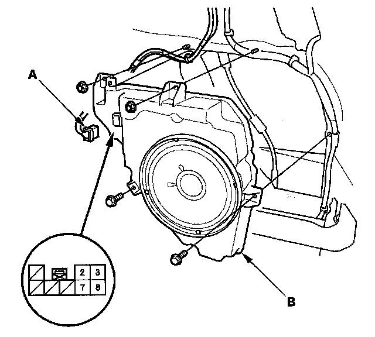

Speaker: Service and Repair
Speaker Test/ReplacementDoor Speaker
1. Remove the door panel.
- Front:
- Rear:
2. Remove the three mounting screws from the speaker (A).
3. Disconnect the 2P connector (B), and remove the speaker.
4. Measure the resistance between the No. 1 and No. 2 terminals there should be about 2 ohms.
5. If the resistance is not as specified, replace the door speaker.
Center Speaker
NOTE:
- Put on gloves to protect your hands.
- Take care not scratch the dashboard.
1. Remove the dashboard upper visor (A).
2. Disconnect the 2P connector (B).
3. Remove the screws and the speaker (A).
4. Measure the resistance between No. 1 and No. 2 terminals there should be about 4 ohms.
5. If the resistance is not as specified, replace the front center speaker.
Tweeter
1. Carefully pry the tweeter grille (A) out of the dashboard. Be careful not to damage the tweeter grille and the dashboard.
2. Disconnect the 2P connector (B) from the tweeter.

3. Remove the tweeter speaker from the speaker grille.
4. Check the capacitor (A) condition. If any malfunction is found, replace the tweeter.
5. Measure the resistance between the tweeter (A) terminal No. 2 and the outside terminal of the capacitor.
There should be about 6 ohms.
6. If the resistance is not as specified, replace the tweeter.
Satellite Speaker
1. Remove the quarter pillar trim.
2. Remove the speaker grille (A) and connector clip (B).
3. Remove the screws and the satellite speaker (C).
4. Measure the resistance between the No. 1 and No. 2 terminals there should be about 4 ohm.
5. If the resistance is not as specified, replace the satellite speaker.
Subwoofer/amplifier unit (With navigation)
1. Remove the right rear side trim panel.
2. Disconnect the 8P connector (A), then remove the bolts, nuts and pull out the subwoofer (B).
Input Test
1. With the connector still disconnected, make the input tests at the connector according to the table.
2. Reconnect the connector to the subwoofer/amplifier unit, and make the input test at the connector according to the table.
3. If the input test proves OK and the subwoofer has no sound, replace the faulty subwoofer/amplifier unit.
Subwoofer (Without navigation)
1. Remove the right rear side trim panel.

2. Disconnect the 8P connector (A), then remove the bolts, nuts and pull out the subwoofer (B).
3. Measure the resistance between the No. 2 and No. 7 terminals and No. 3 and No. 8 there should be about 2 ohm.
4. If the resistance is not as specified, replace the subwoofer.